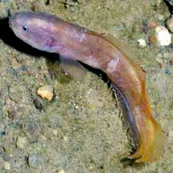
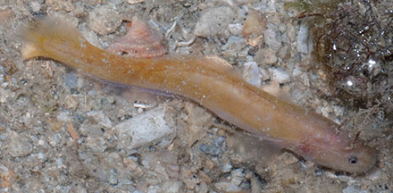
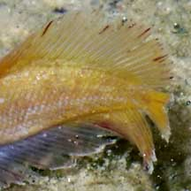
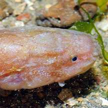
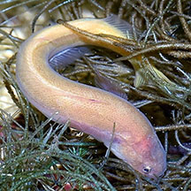
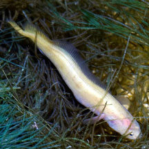

|
|
| fishes text index | photo index |
| Phylum Chordata > Subphylum Vertebrate > fishes |
| Yellow
cuskeel Dinematichthys iluocoeteoides Family Bythitidae updated Sep 2020 Where seen? This odd little eel-like fish is sometimes seen on some of our shores, usually near reefs at night. It was previously listed under Family Brotulidae and thus sometimes still referred to as brotulids. Another species, the Riau viviparous brotula (Ungusurculus riauensis) looks very similar. Features: 4-7cm long, can grow to 12cm. Body long flattened, head rounded with tiny eyes. It has a pair of long filaments under its head, but this is hard to see this in a live fish in the wild. It has scales on body, cheeks and gill covers. Tail fin tiny and is separated from the long dorsal and anal fins. Colour usually orangey pink. Baby cuskeels: Eggs develop inside the mother and she gives birth to live young (ovoviviparous). Embryos are retained in the ovaries until about 6 mm long, getting their nourishment from large yolk sacs. Sometimes mistaken for other eel-like fishes. Here's more on how to tell apart sea snakes, eels and eel-like animals. |
 Labrador, May 06 |
 Sisters Island, Jul 07 |
 Tiny tail fin separated from long dorsal and anal fins. |
| Yellow cuskeels on Singapore shores |
On wildsingapore
flickr
|
| Other sightings on Singapore shores |
 |
 Sentosa Tg Rimau, Oct 25 Photo shared by Loh Kok Sheng on facebook. |
 Sentosa Tg Rimau, Oct 25 Photo shared by Loh Kok Sheng on facebook. |
| Family
Bythitidae recorded for Singapore from Wee Y.C. and Peter K. L. Ng. 1994. A First Look at Biodiversity in Singapore. +Other additions (Singapore Biodiversity Record, etc)
|
Links
References
|